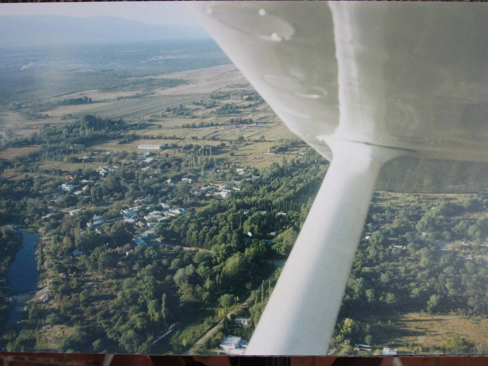

Una roca distinta a todo lo que la rodea
La Piedra Pintada es una formación de arenisca de 19 metros de alto y unos 76 metros de circunferencia. Es única en la zona y se la considera una curiosidad geológica. Su color verde rojizo no es pintura: lo dan distintas especies de musgos que crecen sobre la roca.
Su forma es obra de la erosión. El agua fue desgastando la arenisca, mientras que las partes altas están cubiertas de basalto, una roca más resistente. En un solo lugar se ven las dos piedras que forman el suelo del departamento: el basalto, que cubre casi todo Artigas, y la arenisca que asoma alrededor de la capital.
Qué vas a encontrar
- El Parque Congreso de Abril, inaugurado en 1982, con camping, baños, piscinas, churrasqueras, cantina y venta de leña.
- Una reserva de fauna autóctona en la entrada, con especies que ya no se ven en el resto del país.
- El Museo de las Carretas.
- Monte nativo y el paisaje de la Guayubira, una zona de cultivo de tabaco.
Firmas de más de un siglo
Muchos visitantes grabaron su nombre en la roca. La inscripción más antigua es de 1883 y lleva el nombre de L. Villar; especialistas confirmaron su antigüedad. Mirá las firmas, pero no sumes la tuya: la piedra se cuida entre todos.
Fotos

Foto: Starbock1948 · CC BY-SA 3.0